البدء من سيناريو الاستخدام
يمكن بناء Activity Diagram انطلاقًا من خطوات Use Case Scenario لتوضيح سير العملية بصورة مرئية.
مخطط النشاط
يُستخدم مخطط النشاط لتوضيح تسلسل الأنشطة والخطوات التي يمر بها النظام أو جزء من عملياته، مع إظهار نقاط اتخاذ القرار والمسارات المحتملة أثناء تنفيذ العملية. يساعد المخطط على فهم سير العمل (Workflow) من البداية إلى النهاية، بما في ذلك الأنشطة المتتابعة والمتوازية.
| العنصر | الرمز | الشرح |
|---|---|---|
| Initial Node |
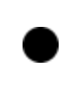 |
يحدّد نقطة بداية سير العمل، ويُمثّل بدائرة سوداء ممتلئة. |
| Activity |
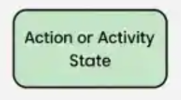 |
تمثّل خطوة أو إجراءً يتم تنفيذه ضمن سير العمل، ويُمثّل عادةً بمستطيل ذي زوايا مستديرة. |
| Control Flow |
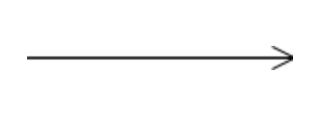 |
سهم يوضّح اتجاه الانتقال من نشاط إلى آخر. |
| Decision Node |
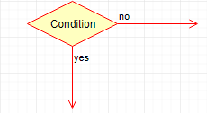 |
نقطة تُستخدم لاختيار مسار من عدة مسارات
بناءً على شرط، وتُمثّل بشكل مُعيّن (Diamond). يدخل إليها سهم واحد فقط ويخرج منها سهمان أو أكثر. يُحدّد شرط كل مسار باستخدام Guard Condition. |
| Merge Node |
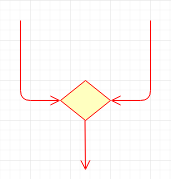 |
تجمع مسارات بديلة متعددة في مسار واحد
دون مزامنة تنفيذ متوازٍ. يدخل إليها سهمان أو أكثر ويخرج منها سهم واحد فقط. |
| Fork Node |
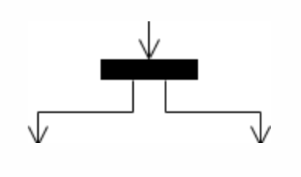 |
تقسّم مسارًا واحدًا إلى مسارات متوازية
يمكن تنفيذها في الوقت نفسه. يدخل إليها سهم واحد فقط ويخرج منها سهمان أو أكثر. |
| Join Node |
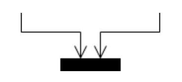 |
تجمع مسارات متوازية وتزامنها قبل متابعة
التنفيذ. يدخل إليها سهمان أو أكثر ويخرج منها سهم واحد فقط. |
| Final Node |
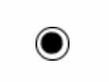 |
يحدّد نهاية النشاط، ويُمثّل بدائرة سوداء ممتلئة تحيط بها دائرة خارجية. |
| Guard Condition |
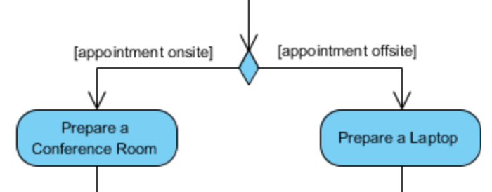 |
شرط يُكتب عادةً بين أقواس مربعة على مسار خارج من Decision Node لتحديد متى يُتّبع ذلك المسار، مثل [Approved] أو [Rejected]. |
| Swimlanes |
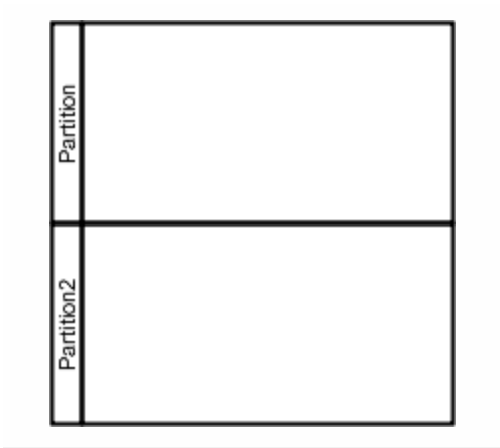 |
تقسّم المخطط إلى مساحات توضّح الجهة أو المسؤول عن تنفيذ كل نشاط، مثل المستخدم أو النظام. |
يمكن بناء Activity Diagram انطلاقًا من خطوات Use Case Scenario لتوضيح سير العملية بصورة مرئية.
يجب توضيح نقطة بداية التدفق ونقاط نهايته بما يناسب العملية الممثّلة. يمكن أن يحتوي المخطط على أكثر من نقطة نهاية إذا كانت هناك مسارات مختلفة تنتهي بشكل مستقل.
عند وجود أكثر من مسار محتمل، يُستخدم Decision Node مع كتابة شروط واضحة للمسارات، مثل [Approved] و[Rejected].
يمكن استخدام Decision دون Merge لاحقًا، لكن إذا وجد Merge لابد من وجود Decision.
يُستخدم Fork لتقسيم التدفق إلى أنشطة متوازية، بينما يُستخدم
Join لمزامنة هذه الأنشطة قبل متابعة التدفق.
يمكن استخدام Fork دون Join إذا لم تكن هناك
حاجة إلى مزامنة المسارات. أما عند الحاجة إلى
مزامنة مسارات متوازية باستخدام
Join، فيجب أن تكون
هذه المسارات قد تفرّعت أو أصبحت متوازية
في مرحلة سابقة.
يمكن استخدام Swimlanes لتوضيح الأنشطة التي ينفذها كل Actor أو مكوّن من مكوّنات النظام.
يُفضّل عدم تكرار النشاط نفسه في المخطط. إذا احتجنا إلى الإشارة إلى العملية ذاتها من مواضع متعددة، يمكن استخدام مرجع إلى النشاط بدلًا من إعادة رسمه.
إذا كان النشاط معقدًا أو يتكوّن من خطوات كثيرة، يمكن رسم تفاصيله في Activity Diagram منفصل، ثم كتابة اسم النشاط في المخطط الأساسي للإشارة إلى الرسم المنفصل بوصفه مرجعًا (Reference). بهذه الطريقة يبقى المخطط الأساسي واضحًا، مع إمكانية الرجوع إلى التفاصيل عند الحاجة.
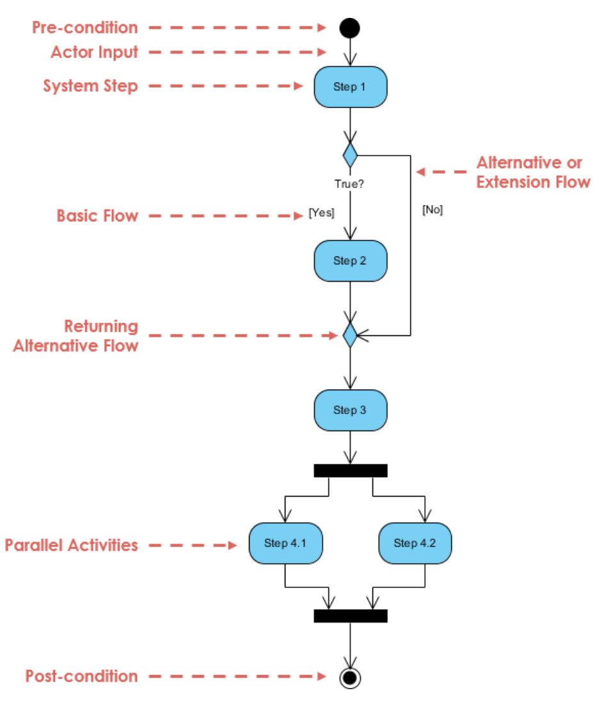